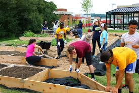
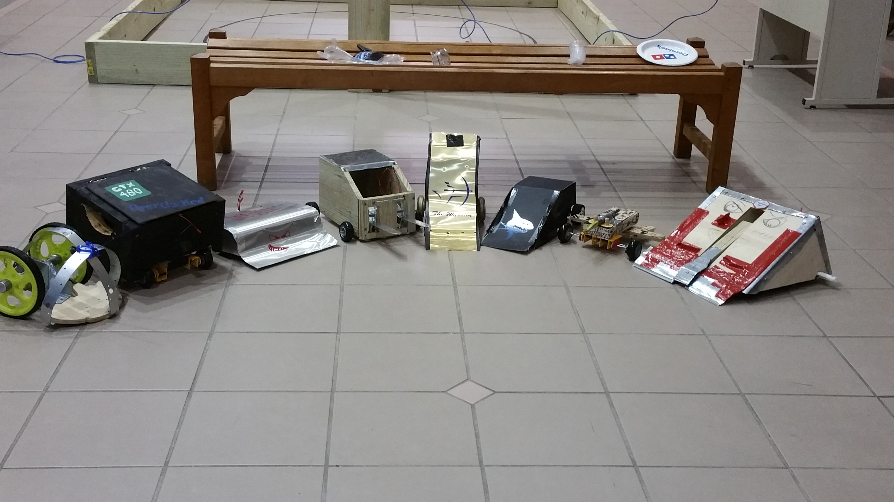
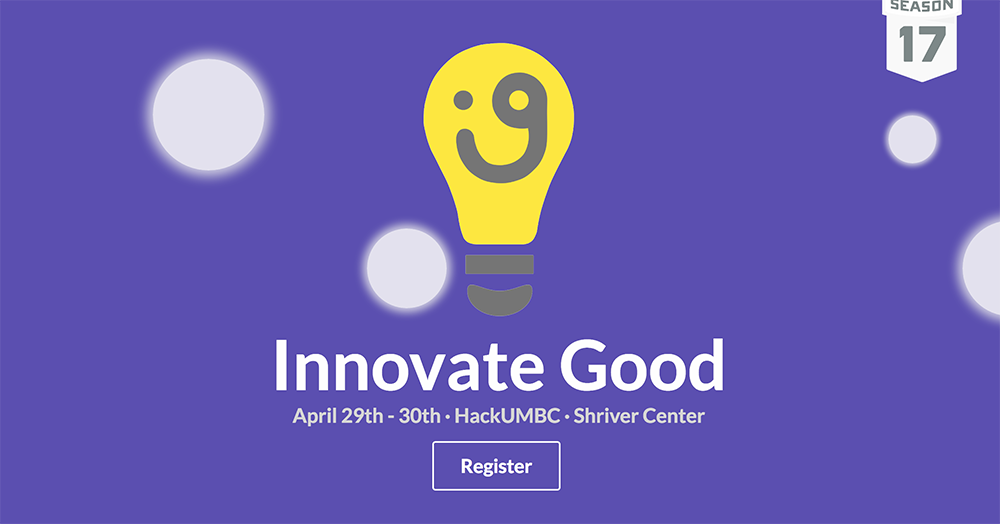

🏗 Projects
Below are some of the projects, summer internships, and club activities I have participated in.
Feel free to brows and read more about each project by clicking the title links.
CWWMCA 2020 Poster

CWWMCA 2019 Poster: Characterizing Hardware Accelerated Data Center Machine Learning
Oct. 17, 2020
Presentation at the 2020 Career Workshop for Women & Minorities in Computer Architecture (CWWMCA) on Google TPU performance characterization in conjunction with the 53rd IEEE/ACM International Symposium on Microarchitecture (MICRO-53)
UCR Ag Ops
UCR CS225 Spacial Computing Ag Ops Project
Jan. - Mar. 2020
Develop front end for mapping agricultural lands and creating pesticide order request and service forms.
Invisible Hands

Invisible Hands Side Project
Mar. 2020
Create a simple map and database to request help durring the pandemic of COVID-19.
Inspired by the work of the organization under the same name
here.
NVMW 2019 Poster

NVMW 2019 Poster: What Can Intelligent SSDs Do for machine Learning
Mar. 10-12, 2019
Presentation at the 2019 Non-Volatile Memories Workshop on SSD powered computation.
Offloading preprocessing work to SSD to reduce host bottleneck with machine learning application and accelerators.
Smart Infinity Mirror
UMBC IEEE Smart Infinity Mirror
Aug. - Dec. 2017
UMBC IEEE developed a smart mirror to display in front of the office.
The mirror features an infinity illusion as well as an API that gives calender updates and up to the minute weather updates.
360 Display
UMBC IEEE 360 Display
Feb. - Apr. 2018
UMBC IEEE students create a display to help represent the IEEE organizations at events in the future.
Electric Skateboard
UMBC IEEE Cheap Electric Skateboard
Feb. - May 2018
UMBC IEEE students attempt to create a cheap and fun motorized skateboard as a proof of concept at the affordability of skateboards.
Quadcopters

Quads on the Quad
Sep. - Apr. 2015
UMBC IEEE along with UMBC UAV club hold a joint quadcopter workshop
as well as end of the year event to test and fly quadcopters students have built over the past semester in the workshop.
HPC REU

High Performance Computing REU 2015
May - Aug. 2015
Undergraduate research assistant to Dr. Matthias Gobbert as part of UMBC Research Experiences for Undergraduates (REU) for high performance computing.
EEG Lab
Electroencephalograph (EEG) Study on Image Formation 2016
May - Aug 2016
Undergraduate research assistant to Dr. Fow-Sen Choa
IEEE Garden

UMBC IEEE Automated Gardening Monitoring System 2017
May - Present
Student lead project in efforts to help beautify the UMBC campus.
Battle Bots

UMBC IEEE and UMBC Robotics Sumo style Battle Bots Competition 2017
Personale seeing the inception of the competition from the begeining to the end
Hack UMBC

UMBC Hackathon 2017
29-30 April 2017
Innovate Good is a 24-hour student Hackathon that held at UMBC 29-30 April 2017 with the theme of creating software or hardware projects to benefit social causes.